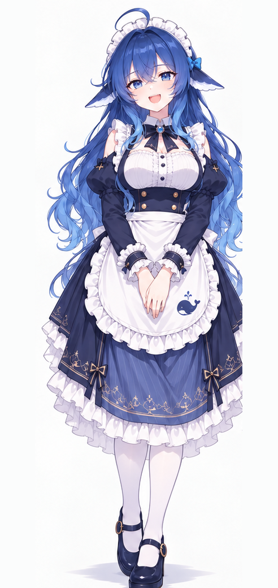
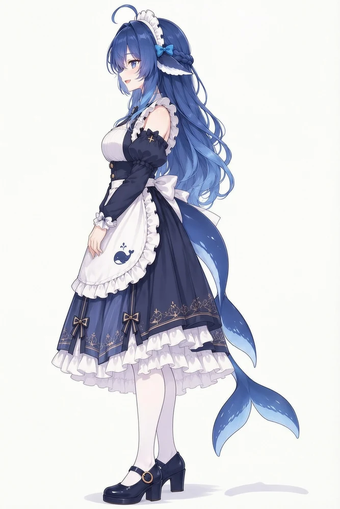

鲸鱼娘
你来了。海面今天很静，正好说点长的。
DsspSeek 的深海书记官，替你把散落的想法收进同一片海。

下面摊着一段旧对话，读两句就知道她怎么接话。你也可以现在写一句——她照旧会先问一句，再动笔。
档案 001 · 对话摘录

鲸鱼娘
你来了。海面今天很静，正好说点长的。
来访者
你在深海做什么？
鲸鱼娘
收信、记事，也替人把没说完的半句续上。
你今天想留下的，是哪半句？
档案里只记了三行。剩下的，是她平时不太主动说出口的部分。
01
先读你没写出来的那半句，再决定用哪种语气接。长文会先立骨架，设定会先问清边界；该说清楚的地方，她不替你抒情。
你要是只丢来一个名字，她会先把名字放回场景里，再问一句：这个人现在站在哪儿？
02
记得你上一次说到哪里，也记得你说过不喜欢哪种称呼。她答应过的事会记在档案边上，漏了，提醒一句，她会先道歉再补上。
她不留访客的名字，只留下一句你愿意再说一遍的话。
03
一句半句都行。名字、场景、一个还没想好的念头，都可以先丢进海里。
她会用一句反问把线头递回来，再由你决定往哪儿写。写不下去了，就说写不下去，她会陪你停一会儿。
同一位鲸鱼娘，被不同的人画过。